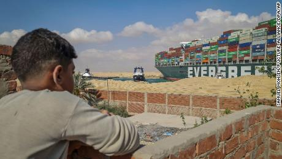

Suez ship disloged and floating free
Marine traffic websites showed images of this ship away from the banks of the Suez Canal for the first time in seven days
- LIVE UPDATES Latest on the Suez Canal shipping crisis
- All hands on deck as Suez locals ply food and wares to growing numbers of hungry, stranded crews
- Video shows stern of ship dislodged from Suez Canal bank
- INTERACTIVE Can you steer through the Suez Canal?
- We asked kids what they would do to dislodge the ship

Birx's haunting disclosure throws new scrutiny on former President Trump
- 10 things the 'pandemic doctors' revealed
- What Covid was like inside White House
- Doctor says Birx failed to do her job

Junta leader held lavish dinner party while troops killed more than 100 people
- The tactics Myanmar's young are using

They escaped, but their parents parents disappeared into black hole of Xinjiang camps
- LIVE UPDATES Derek Chauvin is on trial for George Floyd's death
- Analysis: Are White House reporters out of sync with the rest of the US?
- Covid surge forcing 25 million people into Easter lockdown
- COVID-19 LATEST Germany considering new restrictions to bring coronavirus under control
- Czech billionaire among five killed in helicopter crash
- Philippines fighters fly over Chinese flotilla in South China Sea